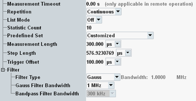
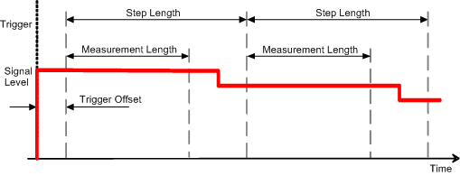

The parameters on the "Measurement Control" tab define how the R&S CMW acquires measurement data.

Defines a timeout for the power measurement in remote operation. "0.00 s" means that the measurement never runs into a timeout. See detailed information in the remote command description.
Remote command:Defines how often the measurement is repeated if it is not stopped explicitly or by a failed limit check.
- Continuous: The measurement is continued until it is explicitly terminated. The results are periodically updated.
- Single-Shot: The measurement is stopped after one statistics cycle.
Single-shot is preferable if only a single measurement result is required under fixed conditions, which is typical for remote-controlled measurements. Continuous mode is suitable for monitoring the evolution of the measurement results in time and observe how they depend on the measurement configuration, which is typically done in manual control. The reset/preset values therefore differ from each other.
See "List Mode".
Defines the number of measurement intervals per measurement cycle (statistics cycle, single-shot measurement). This value is also relevant for continuous measurements, because the averaging procedures depend on the statistic count.
- If the list mode is off, a measurement interval is completed after a single power/frequency step.
- If the list mode is on, the measurement interval comprises the entire sequence of power/frequency steps (sweep).
Loads one of the predefined parameter sets for GSM, WCDMA, TD-SCMA, CDMA2000® 1xRTT, CDMA2000® 1xEV-DO, LTE, Bluetooth®, WLAN or WiMAX.
Sets the length of the averaging intervals that the R&S CMW uses to calculate the power results for each measurement step. The measurement data is acquired continuously. However, data outside the measurement length is discarded. The first evaluation interval starts immediately after the trigger event plus a possible "Trigger Offset" (for triggered measurements) or after the measurement is started ("Free Run" measurement).

Select a measurement length smaller than the actual width of the power steps to avoid the transients caused by the power steps of your input signal. A shortened first step or a trigger offset can shift the measurement length relative to the power steps, see "Single Step vs. List Mode".
Remote command:Sets the time between the beginning of two consecutive measured power steps. If no gaps occur between the steps, set the step length to the length of each step. Together with the "Measurement Length", the step length determines the time intervals where the R&S CMW evaluates the acquired data.
Set the step length precisely in accordance with the properties of the input signal. An accurate setting is especially important if the R&S CMW measures many steps without a new trigger event, for example with a large "Statistic Count" plus "Sub Trigger Mode: Trigger Once". Inaccurate settings result in a drift of the evaluation intervals relative to the power steps of the input signal, so that eventually the power is measured across subsequent steps.
Remote command:See "Trigger Offset".
Sets the type and bandwidth of the measurement filter (IF filter).
"Gauss" | Filter of Gaussian shape with 3-dB bandwidth between 10 Hz and 10 MHz |
"Bandpass" | Bandpass filter with 3-dB bandwidth between 1 kHz and 40 MHz The bandpass filters are designed as root-raised cosine (RRC) filters with a roll-off of 0.1. This design ensures steep filter edges with a wide, flat passband (90 % of the filter bandwidth). Compared to Gaussian filters, the bandpass filters require longer settling times and therefore increase the measurement duration. |
"WCDMA" | RRC filter with a roll-off 0.22 and a 3.84-MHz bandwidth specified for many WCDMA TX tests, for example the "Transmit OFF Power" test, see 3GPP TS 34.121 |
"CDMA" | 1.2288 MHz-wide channel filter specified for CDMA 2000 TX tests. |
"TD-SCDMA" | RRC filter with a roll-off = 0.22 and a 1.28 MHz bandwidth specified for TD-SCDMA TX tests, see 3GPP TS 34.122. |